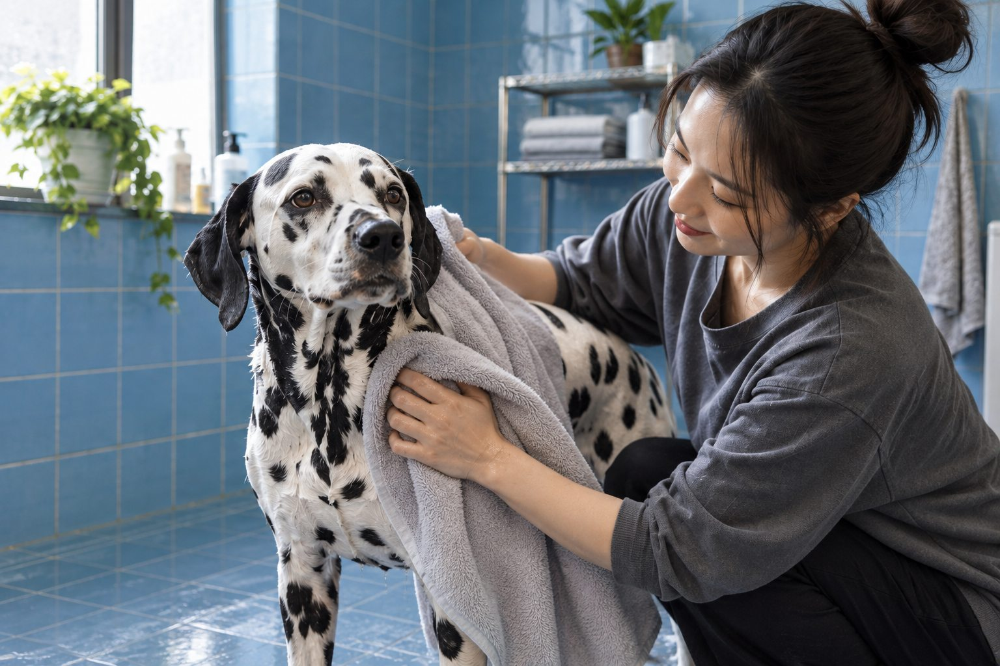

Many healthy dogs do well with a bath every four to eight weeks, but there is no single schedule for every coat or household.
A dog who rolls in mud may need a bath today; a clean, comfortable dog may not. Bathing helps remove dirt and odor, yet washing too often can leave skin dry. Start with your dog’s coat and daily routine rather than a calendar alone.
Find a schedule that fits your dog
Short-coated dogs that stay mostly indoors often need less frequent bathing than active dogs that swim, hike, or spend time in dusty places. Long or dense coats can trap debris, though regular brushing may delay the next bath. Ask your veterinarian or groomer for guidance if your dog has a skin condition or uses a medicated shampoo.
Notice how your dog looks and feels between baths. A coat that is dirty, greasy, or noticeably smelly is a practical signal. An occasional dog smell after outdoor play does not always mean a full shampoo is needed; a clean towel and brush may be enough.
The calendar is only a starting point. A dog that lies on clean floors and takes short pavement walks may stay comfortable longer than a dog that swims, digs, or runs through pollen-heavy grass. Look through the coat rather than judging the surface alone: trapped dirt near the skin, persistent grease, and an odor that remains after brushing tell you more than the date of the last bath. A brief check after outdoor activity also helps separate a dirty patch that needs rinsing from a coat that needs a full wash.
Write down what prompted each bath and how the skin looked several days afterward. If dryness or scratching follows every shampoo, review the product, how thoroughly it was rinsed, and the frequency with your veterinarian or groomer. Bathing more often is not automatically cleaner care. A dog with a diagnosed skin condition may need a prescribed product and schedule that differs sharply from the routine for a healthy housemate. Keep those plans separate even when the dogs look similar.
Make bath time comfortable
Brush out loose hair and tangles before wetting the coat. Place a nonslip mat in the tub, use lukewarm water, and keep water out of the eyes and ear canals. Choose a shampoo made for dogs and follow its label; human shampoo may irritate canine skin.
Massage gently, rinse thoroughly, and keep the experience calm. Shampoo left behind can make skin itchy. Dry with towels and, if your dog tolerates it, a dryer on a cool, low setting held at a safe distance. Give your dog a break if they become distressed.
Prepare the room before bringing your dog in. Place a towel and a nonslip surface where the dog will stand, open the shampoo, and have a cup or gentle sprayer ready. A dog that is already worried is unlikely to relax while you search for supplies. Start with brief handling and reward a still, comfortable posture. If the dog tries to leave, pause and make the next attempt shorter. This is especially important for an older dog that may feel unstable in a smooth tub.
Wet the coat thoroughly before adding a small amount of dog shampoo, then work it through the coat without scrubbing irritated skin. Avoid forcing water into the ears or face. Rinsing often takes longer than washing because dense hair can hide soap near the skin. Check the belly, armpits, and feet before drying. Drying is part of the bath, particularly for thick coats or skin folds. Keep any dryer cool and at a comfortable distance, and stop if noise causes distress.

Between-bath care
Wipe paws after muddy walks, wash bedding, and brush according to coat type. These small jobs often make more difference than adding extra full baths. A damp cloth can clean a localized patch of dirt without soaking the whole dog.
If persistent odor returns quickly, or you notice redness, flakes, sores, or heavy scratching, speak with a veterinarian. A grooming product may not solve an underlying skin problem. Keep a note of when the smell or irritation started and any new products you used.
Between baths, focus on the sources of dirt. A washable mat by the door catches wet paws, while a quick brush removes loose hair and some outdoor debris before it spreads through the home. Clean the dog's bedding according to its label and let it dry completely. If a dog repeatedly develops an odor soon after washing, compare the smell at the ears, mouth, skin, and bedding rather than reaching immediately for another scented shampoo. The location of the odor may point toward a problem that a bath cannot fix.
Spot cleaning is often kinder than repeating a full bath for one muddy leg. Use a damp cloth or a brief lukewarm rinse, then dry the area, especially between toes. After swimming, remove visible debris and check that the coat is drying normally. Brushing should suit the coat: forcing a brush through a mat can hurt, so ask a groomer for help with tight tangles. A simple weekly coat check gives you a more useful baseline than any universal bathing interval.
Common bathing mistakes
Very hot water, strong fragrances, rushed rinsing, and baths that run too long can turn a routine task into an uncomfortable one. Avoid putting cotton swabs deep into ears during a bath. If your dog resists the tub, practice standing in a dry tub with rewards before adding water.
Puppies, seniors, and dogs with mobility problems may need extra help with footing and temperature. If you use a medicated product, follow the veterinarian’s directions rather than a general bathing interval.
Watch how your dog behaves throughout the process. Freezing, frantic escape attempts, repeated lip licking, or refusal of a normally valued reward can mean the bath is too difficult at that moment. Practice separately with the empty tub, the sound of water, and gentle paw handling before combining every step. For a large or mobility-impaired dog, ask a groomer or veterinary team about safer equipment instead of lifting the dog awkwardly. Preventing a fall matters more than completing the bath on a chosen day.
Do not assume that a stronger smell requires a stronger product. Perfume can mask an issue without treating it, and human shampoos may not suit canine skin. Avoid mixing medicated and ordinary products unless the veterinarian instructs you to do so. If you notice broken skin, persistent redness, greasy flakes, sores, or a dog that scratches through the night, arrange an examination. Bring the product labels and your bath record. That gives the clinician a clearer picture than the statement that the dog is simply dirty.
Practical details
How coat type changes the answer
A short, smooth coat usually releases dirt easily. A longer or denser coat holds outdoor debris and may need more brushing before a bath. Curly coats can mat if dirt and moisture sit close to the skin. None of those descriptions, however, determines an exact number of weeks on its own. Two dogs with the same coat can need different care because one swims every weekend while the other mainly walks on clean pavement.
Build a starting interval and then adjust it using what you see. If your dog smells pleasant, the coat feels clean, and the skin looks comfortable, there may be no benefit in bathing early. If a dog becomes muddy often, spot cleaning can avoid repeated full shampoos. A groomer can advise on drying a dense coat; trapped moisture may irritate skin even after a careful wash.
A six-step bath that respects your dog's skin
- Brush before waterRemove loose hair and small tangles while the coat is dry; wet knots tighten and can pull on skin.
- Check the temperatureUse lukewarm water and a nonslip surface so the dog can stand securely throughout the bath.
- Wash with dog shampooWork gently from the neck down, keeping shampoo out of the eyes, nose, and ear canals.
- Rinse, dry, and observeRinse until water runs clear, towel dry thoroughly, and watch for redness or discomfort afterward.
The skin-health exception
A dog with itchy, flaky, or oily skin is not simply a dirty dog. Bathing too often with the wrong product can make discomfort worse, while some diagnosed conditions call for a specific medicated bath schedule. That schedule belongs to your veterinarian, who can explain product choice, contact time, and when to stop. Do not copy another dog's medical bathing routine, even if the symptoms look similar.
Watch for a change after a new shampoo, flea product, or swimming trip. Redness along the belly, repeated scratching, or a smell that returns quickly is useful information to note. Photograph a visible patch and record when it appeared. If you cannot rinse a product fully, or the dog becomes distressed in the tub, pause and ask for help rather than continuing a difficult wash.
A realistic household example
Imagine a healthy indoor dog who takes two short city walks daily. Brushing and a quick paw wipe may keep that dog comfortable for several weeks. A second dog of similar size spends afternoons in muddy fields; that dog may need more frequent cleaning, but a rinse after the muddy outing may still be enough. The difference is the actual dirt and coat condition, not a rule attached to breed or size.
For the first two months, jot down the bath date, what prompted it, and how the coat and skin looked a week later. That small record helps you find a routine without guessing. If the skin becomes dry, reassess product and frequency. If odor or itching persists despite sensible care, book a veterinary visit rather than shortening the interval again.
Consider two ordinary households. One dog walks in a clean neighborhood, is brushed several times a week, and stays comfortable for a long interval. Another spends weekends in wet fields and needs a rinse after many outings. Both can have good hygiene without following the same bath date. The useful test is whether the coat remains clean enough for comfort and whether the skin tolerates the routine. If the second dog comes home muddy, remove that mud promptly rather than waiting for a scheduled shampoo day.
Revisit the routine when seasons, activity, or health change. Winter heating may make skin feel drier; summer swimming may increase the need for thorough rinsing and drying. A new puppy may need short, positive introductions to bathing, while an older dog may need a lower surface and more support. Keep the plan flexible and record what works. The aim is a comfortable dog with healthy skin, not a perfectly regular calendar.
A useful monthly review is to compare the coat before and after your current routine. Is it easier to brush, or does it become dry and flaky? Does the dog remain comfortable for several weeks, or does an odor return within days? Note whether the smell comes from the coat itself or from an ear, mouth, or bedding. These observations help you adjust care without increasing baths by reflex. If a groomer handles bathing, ask which products were used and how the skin looked beneath the coat. Share any persistent concerns with the veterinarian rather than changing products repeatedly.
For households with children, teach them that bath time is not play time. Adults should supervise water temperature, footing, and handling. Give the dog a quiet route out of the bathing area and dry the floor to prevent slips. If the dog becomes distressed, end the session safely and practice easier steps later. A low-stress bath can protect the relationship as well as the skin. Over time, the best schedule is the one that maintains cleanliness and comfort while fitting the dog's actual activity.
Continue exploring
For a broader routine, read How to Clean Your Dog's Ears Safely at Home, How Often Should You Trim Your Dog's Nails?, and How to Brush a Dog's Coat Without Pulling.
Frequently Asked Questions
How often is too often to bathe a dog?
It depends on the dog and product. If the coat becomes dry or the skin irritated, review the schedule with your veterinarian or groomer.
Can I use human shampoo on my dog?
Choose a product formulated for dogs unless your veterinarian gives specific instructions otherwise.
Why does my dog smell soon after a bath?
Incomplete drying, dirty bedding, or a skin or ear issue may contribute. Persistent odor deserves veterinary advice.
Editorial references
These resources informed the general guidance in this article. They do not replace advice tailored to your pet.
This guide offers general information. Your pet’s age, health, and history may call for a different plan. For medical concerns, ask your veterinarian.